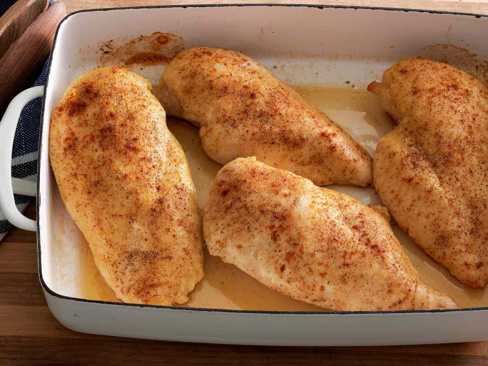

Home
Chicken

Learn how to bake chicken that's tender, juicy, and perfect every time with this simple, 5-ingredient recipe for boneless, skinless chicken breasts. Adding just a bit of chicken broth to those beautiful pan drippings creates a tasty pan sauce that adds extra flavor at the table.
Ingredients
- Chicken Breasts: Of course, you'll need chicken breasts. This recipe calls for four skinless, boneless chicken breast halves.
- Olive Oil: Olive oil provides moisture and prevents the chicken breasts from drying out. It also helps the chicken cook more evenly.
- Salt:Use your favorite coarse sea salt for the most delicious results.
- Creole Seasoning:Creole seasoning adds flavor and a bit of welcome heat.
- Chicken Broth: You'll use chicken broth to make an easy pan sauce to pour over the baked chicken.
Directions
- Gather all ingredients.
- Rub chicken breasts with olive oil and sprinkle both sides with salt and Creole seasoning. Place chicken in a broiler pan.
- Bake in the preheated oven for 10 minutes. Flip chicken and cook until no longer pink in the center and the juices run clear, about 15 minutes more. An instant-read thermometer inserted into the center should read at least 165 degrees F (74 degrees C).
- Remove chicken to a plate. Pour chicken broth into the pan and scrape any browned bits off the bottom with a flat-edged wooden spatula. Add more broth if needed to dislodge the browned bits, but not too much or it will be watery.
- To serve, drizzle the pan sauce over the chicken.